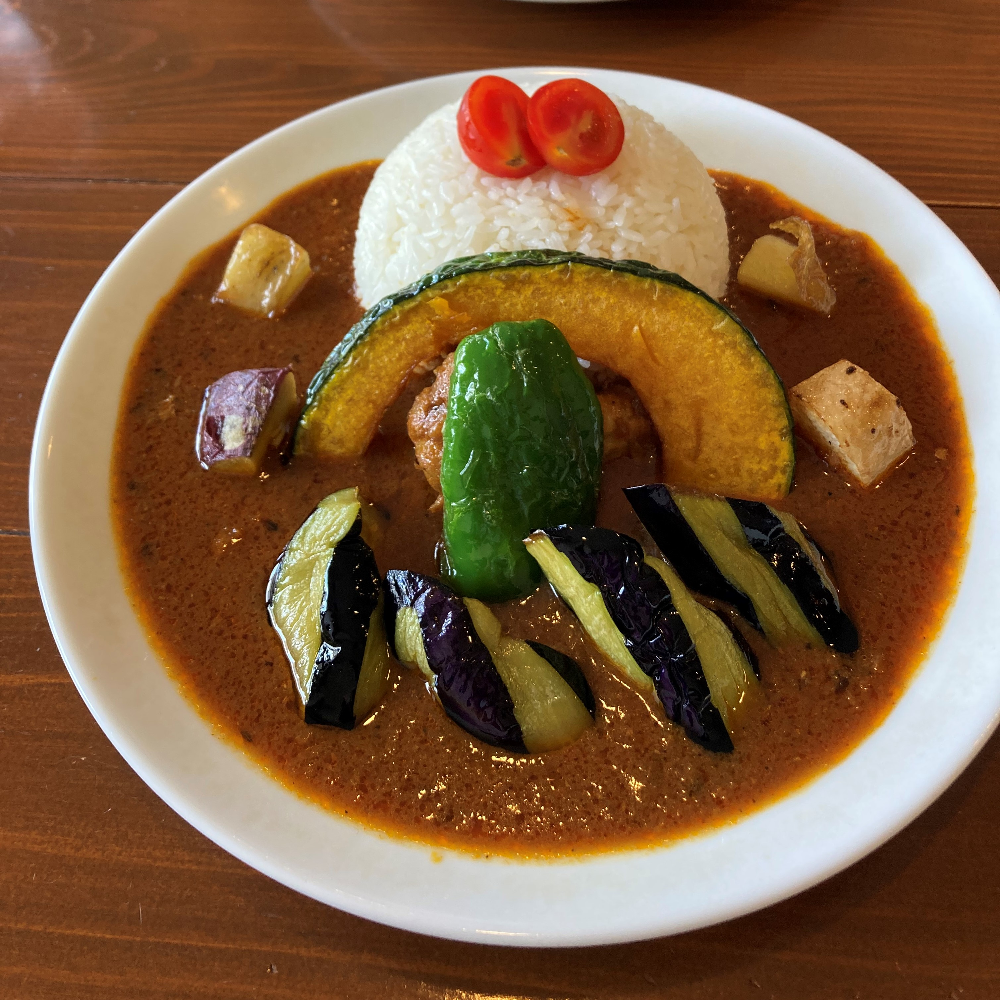
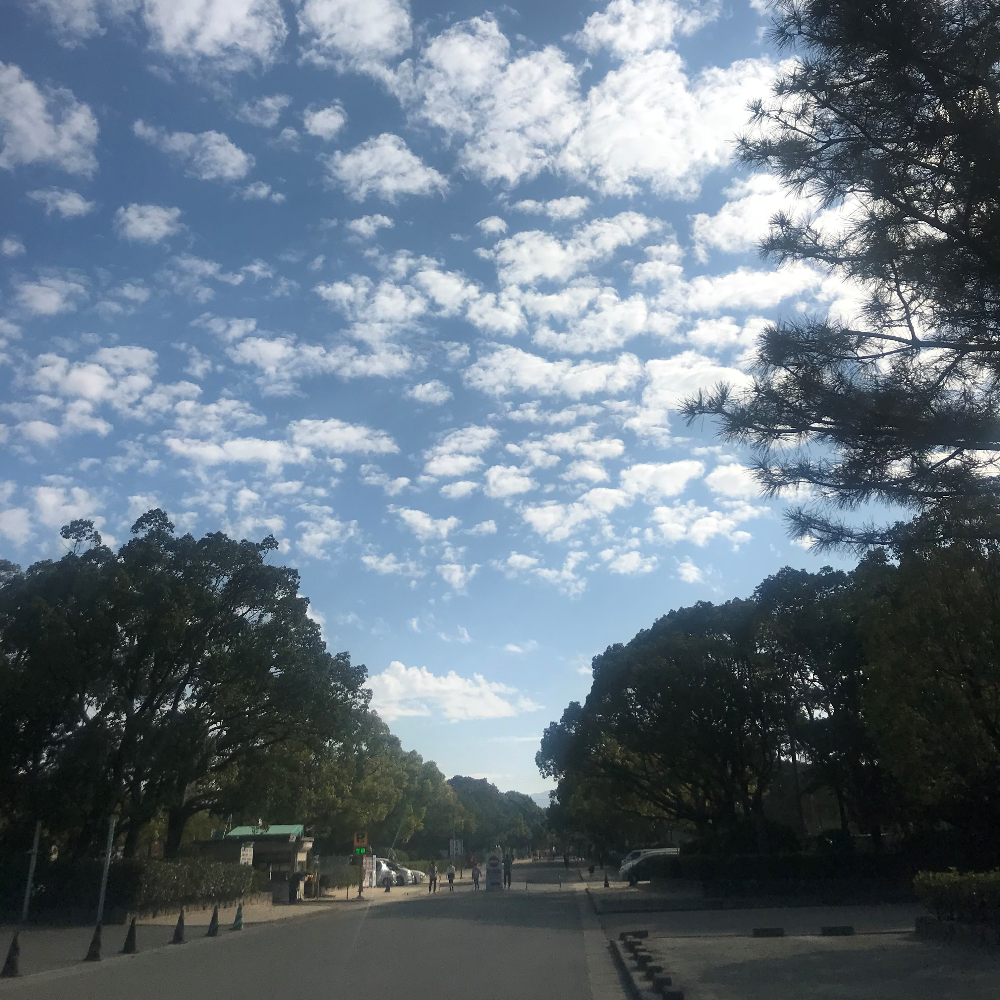

Profile

- 名前：江頭舞（えがしらまい）
- 大学：九州大学大学院
- 専攻：医用量子線科学分野
（学部生の時は放射線技師になる勉強をしていました） - 出身：佐賀県
Hobbies

2.J-ROCK

コロナが流行る以前はよくJ-rockバンドのライブいってました！
とくに好きなバンドはSUPER BEAVERとKANA-BOONです。
3.うさまる

LINEのスタンプでおなじみのうさまるが大好きです！
写真のうさまるマカロンはインスタで作者さんにいいね！をもらいました！
4.カレー巡り
友達と福岡のカレー巡りによく行きます！関東のおすすめのカレー屋さんを教えてほしいです。
5.部活動(陸上競技部)

学部の４年間は陸上競技部のマネージャーをしていました！
6.さんぽ
昨年のステイホーム期間から朝の散歩をよくしています！
最近寒くて凍えています。